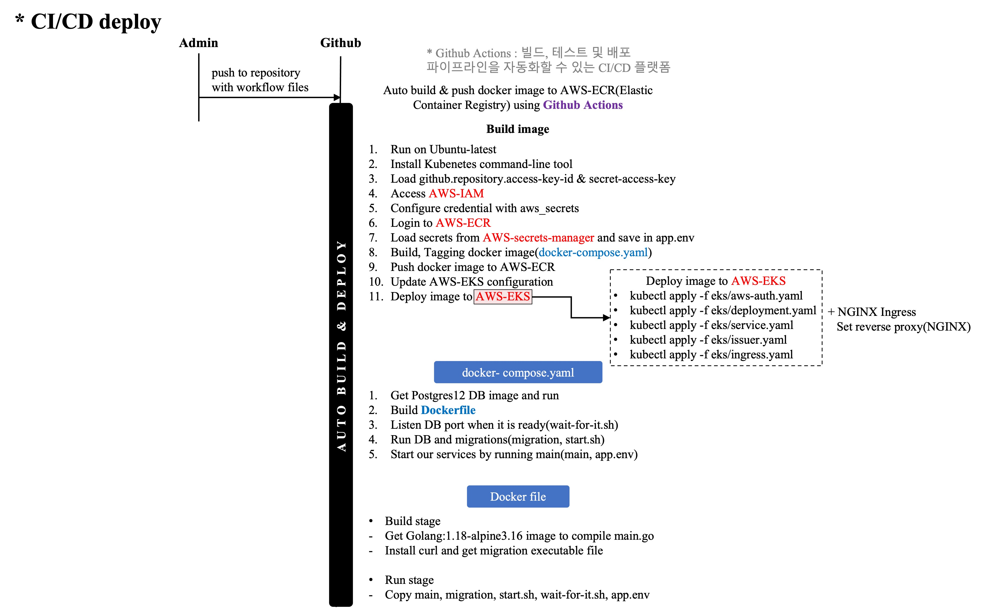
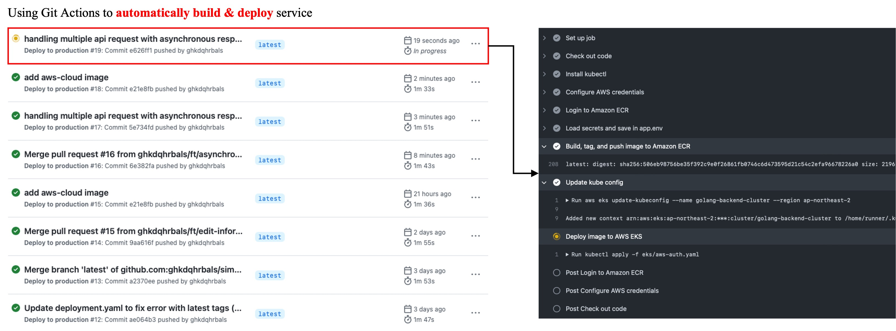
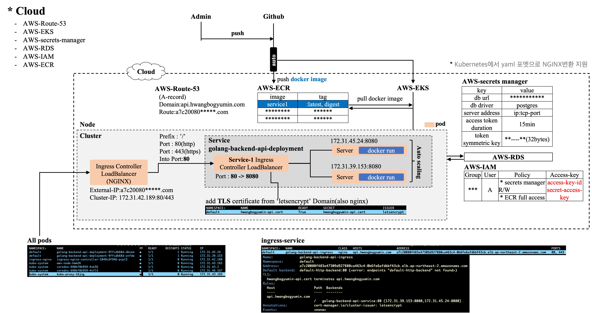
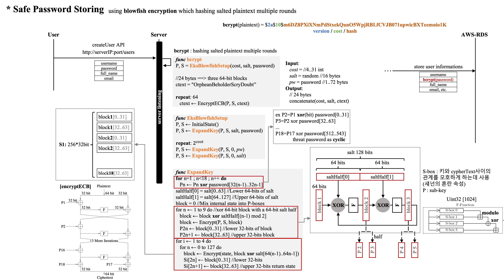
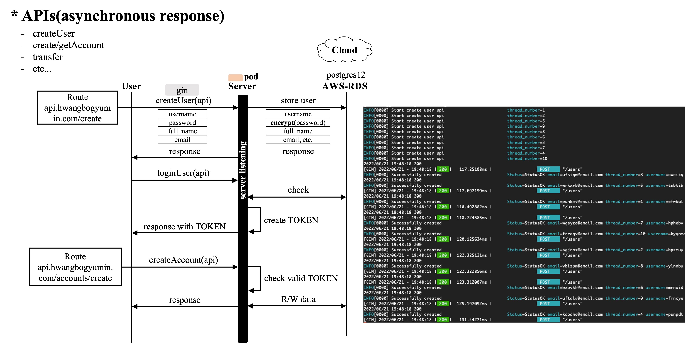

Progress
For my experience in golang-backend, I use below skills for develop my banking service.
You can see the source code in my github. Banking backend server
Skills
| Skills | Purposes |
|---|---|
| RDS(Postgresql) | storing User,accounts,balance info |
| migration | auto-migration |
| sqlc | generate Golang interface from sql |
| git-workflow | auto-deploy |
| gin | HTTP communication |
| bcrypt | safe way to store PW |
| Viper | auto-server configuration setting |
| Gomock | testing RDS |
| Docker | auto-setting env and ease for run |
| Kubernetes | auto-scaling and managing pods(docker images) |
| JWT or PASETO | TOKEN based authentication(reduce session weight) |
| JQ | conversion JSON to txt |
| AWS | get fixed public IP and for automation, maintenance |
How to automatically deploy our service?
 
We use AWS with following service

How can we safely store user password in RDS?

How can we handle multiple api request with asynchronous response?

Update[v1.4.4]
- Set Kubernetes Cluster
- Set aws-ath.yaml to access AWS-EKS(with granted user)
- Set deployment.yaml to get image from AWS-ECR and run with 2 replica(pod)
- Set issuer.yaml to issue TLS certificate
- get certificate from ‘letsencrypt’ with domain ‘api.hwangbogyumin.com’(free)
- Set ingress.yaml with Nginx ingress controller
- request -> api.hwangbogyumin.com
- api.hwangbogyumin.com -> aws-route-53 my arn
- aws-route-53 my arn -> nginx-ingress address
- nginx-ingress address -> ingress-service(TLS)
- ingress-service -» server pods(1,2)
- Use AWS-Route-53 to create Domain & Set Kubernetes Ingress-service pods
Update[v1.4.3]
- Use Git Action for auto AWS docker image upload
- Set Configure AWS credentials
- Add AWS_ACCESS_KEY_ID, KEY in Github Repositry secrets
- AWS-IAM secrets:AWS_ACCESS_KEY_ID, AWS_ACCESS_KEY
- Launch deploy action
- Get secrets from Git and Access with token
- Login
- build images and Deploy to AWS-ECR ap-northeast-2
- Add services(AWS-ECR, AWS-Secrets Manager, AWS-IAM, AWS-RDS)
- Secrets Manager for managing symmetric_key that can encrypt/decrypt Paseto Payload and RDS port, RDS root, key
- Set IAM(Identity and Access Management) for safe AWS resource access
- Set ECR(Elastic Container Registry) in ap-northeast-2
- Set RDS(Relational Database Storage) in us-west-1, postgres12
- JQ
- Get RDS informations and etc. from AWS secrets manager
- Transform AWS secrets format into JSON format using JQ
- Based on json data, set app.env with corresponding data
Update[v1.4.2]
- Edit Dockerfile & Docker-compose file
- Set shell script(wait-for-it.sh) to wait until postgres is readyDetail
- As we alpine image, ‘apk add bash’ needed
- Set shell script(start.sh) to migrate db up
- Edit Dockerfile to add needed files
- migrate, app.env, main(object file), pre-setting shell script(wait-for-it.sh, start.sh)
- Make docker-compose.yaml to specify services name and environment variables
Update[v1.4.1]
- Add Token Authentication Middleware
- Set user.go/loginUser for create/verify TOKEN
- Set Route(createAccounts, transferMoney, etc.) Group that need authorization.
- Make authMiddleware for pre-check requests whether they have TOKEN for authorization
- Edit api/server.go
- Before get request, check and verify http header’s authorized part.
- If there is a TOKEN that server created, pass request to actual handler.
- If no TOKEN exists, abort session and send response.
- 위의 http통신은 TLS로 encrypt되었음을 가정한다. TLS Details
- TLS가 적용되지 않았으면 TOKEN가 탈취되었을 때, Server에 권한없이 RPC 통신하여 DB 탐색가능.
- Testcase정의
1 2 3 4
1. User ----- Login --> Server [LoginParams] = username, password 2. User <---- TOKEN --- Server [TOKEN] = chacha20poly1305(nonce, Server's Key, AEAD, Payload{username, duration}) 3. User ----- CreateAccount --> Server [Params] = currency, TOKEN 4. User <---- Account's Info --- Server [Account] = verifyToken(Server's Key, TOKEN)Update[v1.4.0]
- JWT(JSON Web Token)의 HMAC-SHA256(HS256) algorithm를 통한 payload+header ‘Encryption’ and ‘MAC’ 생성
- Set secretKey as random 256 bits(As we use HS256, Key should be 256 bits) Temporary!
- Make CreateToken function(interface)
- ( [HEADER]:’alg:HS256,typ:jwt’, [PAYLOAD]:’id:string, name:string, expiredAt:time’, [SIGNATURE]:’HMAC([HEADER],[PAYLOAD]).TAG’ )
- Make VerifyToken function(interface)
- Check HEADER, SIGNATURE, …
- Set test enviroments
- case Invalid Header algorithm, MAC failed, Expiration, etc.
- PASETO(Platform-Agnostic Security Tokens)의 chacha20Poly1305 algorithm를 통한 payload+header+nonce ‘Encryption’ and ‘MAC’ 생성
- Set secretKey as random 256 bits(As we use chacha20Poly1305, Key should be 256 bits) Temporary!
- Make CreateToken function(interface)
- Make VerifyToken function(interface)
- Set test env.
Update[v1.3.1]
- Set Testcase of managing User password
- Set api/user_test.go TestCreateUserAPI test function
- cases: “OK”, “InternalError”, “DuplicateUsername”, “InvalidUsername”, “InvalidEmail”, “TooShortPassword”
- Set Custom reply matcher(gomock)
Update[v1.3.0]
- Use Bcrypt(Blowfish encryption algorithm) for safe storing user password(Detail)
- Set util/password.go using bcrypt which can randomly generate cost, salt to get hashed password with params
- Set util/password_test.go for testing
- Make api/user.go to set createUser handler
- Set routes(“/user”) for request from clients
Update History
- Use Gin framework to communicate RPC(Details)
- Set router, routes
- Set various handler
- Get http request
- Use custom validator to check if it is a valid request.
- Binding JSON to STRUCT(request)
- Access Local Database -> Execute transactions -> Get results(all process can handle with error)
- Response
- Use Viper for auto configuration setting (Details)
- Set /app.env
- Set /util/config.go
- import configurations in /main.go
- Use Gomock to remove DB dependency from tests in service layer (Details)
- Use sqlc interface with all query functions to interface
- Edit /.bash_profile for PATH to go/bin(to using mockgen)
- Execute mockgen to generate mock functions
- Set APIs for testing(TestGetAccountAPI)